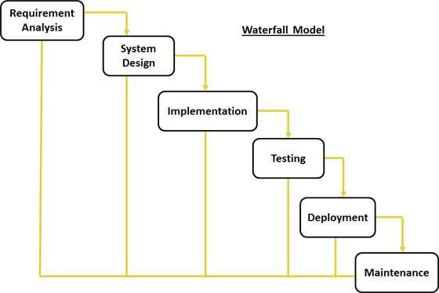
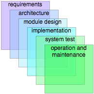
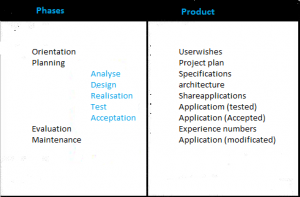
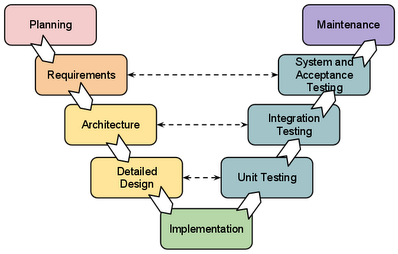
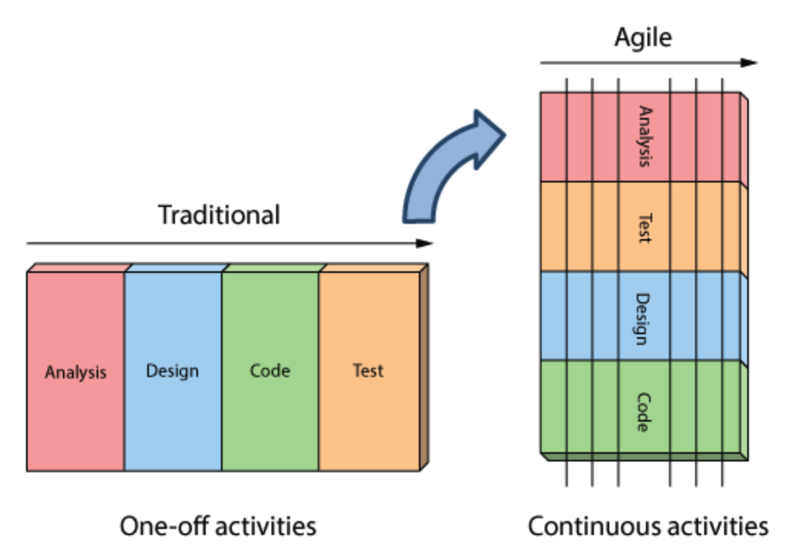

Waterfall Method
By: Cassiane Cladis and Elizabeth Lor
CSCI 5828 - Presentation 1
Index
- History of Waterfall Model
- Features of Waterfall Model
- Phases of Waterfall Model
- Description of Each Phase
- Advantages
- Disadvantages
- Example of Waterfall Model
- Example of Waterfall Method Flaws
- Importance to Software Engineering
- Additional Materials/Fun Facts
History of Waterfall Model
- Winston W. Royce 1970 article, "Managing the Development of Large Software Systems" introduced the description of the waterfall model.
- The article contained many of his personal views on software development.
- Royce did not use the term "waterfall" in the article.
- Royce presented the model as an example of a flawed, non-working model.
Winston W. Royce (1929-1995)
- Computer scientist with Lockheed Software Technology Center
- Pioneer in the field of software engineering
- He was involved in the research and development of several large and complex software systems, and started developing new methodologies for improving the management of software projec
- His influential article "Managing the Development of Large Software Systems" presented several project management models, including concepts that we now accredit to waterfall, iterative, and agile life cycles.
Royce Did Not Endorse the Waterfall Model
- Royce is mistakenly accredited with the waterfall method
- Royce described the method that is now known as waterfall and said:
- “I believe in this concept, but the implementation described above is risky and invites failure.”
- He identified the pattern and showed one of the major problems of the Waterfall model as the testing phase occurs at the end of the development process.
- “Either the requirements must be modified, or a substantial change in the design is required.”
Royce's Recommendations
- Royce proposed a more incremental development, where every next step links back to the step before.
- Not the agile method but had a few ideas that were agile and seemed to move in that direction
- Royce suggested 5 changes to the current (waterfall) method
- Program design comes first
- Document the design
- Do it twice
- Plan, control and monitor testing
- Involve the customer
How did Royce's message get lost?
- Urban legend has it that an employee of the Department of Defense was charged with finding a new software development process.
- He only read the first page of Royce’s paper and saw the figure at the top of page 2 that looked like a waterfall.
- Without reading the rest of the paper this DoD employee proposed the model, as it was simple and easy to follow thus creating the Waterfall model.
- Since this employee did not read the whole article, they never read about Royce’s ideas to fix this deficient method.
Why Is Waterfall Flawed?
- Illustrates the software development in a linear sequential flow.
- One phase acts as the input for the next phase sequentially.
- Any phase in the development process begins only if the previous phase is complete.
- The phases do not overlap
- Therefore it is difficult to go back to phases and change flaws.
- Royce believed that a successful model should have the allowance to repetition or go back and forth between phases.
Why It Is Still Used
- History of working in state and defense projects.
- Scientific articles that discuss the Waterfall model all cite Royce's article
- Articles often use phrasing like: "The waterfall is a proven method (Royce, 1970)"
- Unfortunately this is how science works
- Researchers cite based on "buzz" or popularity from other researchers and don't read the publications but go off of second-hand research
- Nonetheless, the Waterfall method was widely used in Software Engineering and is still used today though often in modified models
Waterfall Model
Definition
The waterfall model is:
"A sequential design process, used in software development process, in which progress is seen as flowing steadily downwards (like a waterfall) through the phases of conception, initiation, analysis, design, construction, testing, production/implementation and maintenance"
Features of Waterfall Model
- It is simple to understand and use.
- It can be implemented for projects of varying size and scope.
- Each stage has to be done separately and sequentially.
- Each stage must be completed before the next phase can begin.
- The phases do not overlap.
- Documentation is produced at every stage allowing people to understand what has been done.
- Testing is done at every stage.
Phases of Waterfall Model
The waterfall model has 6 different phases:
- Requirement Gathering and Analysis
- Design
- Coding (Implementation)
- Testing
- Deployment
- Maintenance
Phase 1: Requirement Gathering and Analysis

Phase 1: Requirement Gathering and Analysis
- This phase includes a meeting with the customer to understand the user requirements and creating a product requirements document (Requirements Understanding Document)
- Research Conducted:
- Brainstorm and walkthrough to better understand the requirements
- Requirements feasibility test
- What is the software going to be
- Purpose it will fulfill
Phase 1: Con't
- This is the most crucial phase as any misinterpretation at this stage may give rise to validation issues later.
- The software definition must be detailed and accurate with no ambiguities.
- It is very important to understand the customer requirements and expectations so that the end product meets his/her specifications.
- The basic requirements of the system must be understood by software engineer.
- All requirements are well documented and discussed further with the customer for reviewing.
Phase 2: System Design
Phase 2: System Design
- Requirement specifications from Phase 1 are studied.
- Customer requirements are broken down into logical modules.
- Helps in specifying hardware and system requirements
- Helps in defining overall system architecture
- Relationship between the various logical modules is established.
- Algorithms, diagrams, and functions are decided/developed
- Engineering units are placed (i.e. modules, programs, etc.)
Phase 2: Con't
- Requirements are translated so coding can be done effectively and efficiently.
- Designing needs to be documented for further use.
- This phase lays a fundamental for actual programming and implementation.
- Create High Level Design Document (HLD) and Low Level Design Document (LLD)
Phase 3: Implementation
Phase 3: Implementation
- With inputs from Phase 2, the system is first developed in units.
- Software is divided into small modules for coding rather than coding the whole software.
- Source code is written.
- Design is translated into machine-readable format.
- Programs are created in this phase.
- Unit Testing: Each unit is developed and tested for its functionality.
Phase 4: Testing
Phase 4: Testing
- Units developed in the Phase 3 are integrated into a system after testing each individual unit.
- Ensure error-free by testing and fully meeting the requirements outlined in Phase 1.
- Post integration the entire system is tested for any faults and failures.
- Testing is done in two parts:
- Hardware
- Software
Phase 4: Con't
- Whole design and its construction is put under a test to check its functionality.
- Any errors will surface at this point of the process
- Materials produced in this phase:
- Test cases
- Test reports
- Defect reports
- Updated matrices
Phase 5: Deployment

Phase 5: Deployment
- Once the functional and non-functional testing is done, the product is deployed in the customer environment or released into the market.
- In order to deploy the system the engineers need to make sure:
- Deploy the application in the respective environment.
- That there are no severe defects open.
- Make sure that the test exit criteria are met.
- Perform a sanity check in the environment after the application is deployed to ensure the application does not break.
- The User Manual is also produced at this time.
Phase 6: Maintenance
Phase 6: Maintenance
- Software development team undertakes routine maintenance activities by visiting the client site.
- If enhancements or changes are needed, the software process has to be followed all over again.
- How issues can be fixed
- Patches are released to fix issues
- Better versions are released to enhance the product
Phase 6: Con't
- This is usually the longest stage of the software.
- Software is updated to:
- Meet the changing customer needs
- Adapted to accommodate changes in the external environment
- Correct errors
- Enhance the efficiency of the software
Advantages of Waterfall
- Easy to understand and use.
- Allows for departmentalization and control.
- The fulfillment of one phase is needed before proceeding to the next.
- Each phase has specific deliverables and review process.
- Design errors are captured before any software is written, saving time during the implementation phase.
Advantages Con't
- Each phase of development proceeds in a strict order.
- Phases are processed and completed one at a time.
- Works well for smaller projects where requirements, budget and scope are very well understood.
- Easy to arrange tasks.
- Process and results are well documented.
Disadvantages of Waterfall
- Requirement analysis is done initially.
- Sometimes it is not possible to state the entire requirement at the beginning.
- There are high amounts of risk and uncertainty.
- Customer can see working model only at the end.
- Poor model for long, ongoing projects where there is no set timeline.
Disadvantages Con't
- Not possible to backtrack since the phases flow from one to another.
- Does not allow much for reflection or revision.
- Once in the testing phase, it is very difficult to go back and change something.
- Not a good model for complex projects.
- Not good for project where requirements are at high risk of changing.
Disadvantage: Silos
- An oft-cited disadvantage is the "silo" effect, when large companies tend to create departments for each of the phases
- The requirements specification phase is done by business analysts, design by architects, implementation by developers, etc.
- However, each of the department works in isolation from each other and are "silo-ed"
- There is limited availibility for the departments to support one another after the work is passed along, which prevents team cohesion.
Silos Con't
- Common result of having phases and “silos” is increase in management and documentation effort.
- Since team communication is reduced as the result of phases and silos, it needs to be compensated with the increase in documentation.
- It is not uncommon that medium to big projects spend one third or even half of the budget in documentation and management.
Example of Waterfall Model Used:
Product Development – Developing a Customer Address Book
Product Requirements
- Product manager creates requirement documents that include the following requirements (in order of priority).
- User should be able to create new contacts.
- User should be able to view their contacts.
- User should be able to import contacts from other programs.
- User should be able to email their contacts from the address book.
- User should be able to add pictures to represent their contacts.
Product Requirements Con't
- These requirement documents will include details requirements, user scenarios and potential layouts for the functionality.
- Timeframe: 2 weeks
Analysis
- Engineering team takes these requirements and analyzes them, asking questions as needed.
- Product manager updates the documents, as questions are resolved.
- Timeframe: 1 week
Design
- Engineering team creates a design for functionality, including database design, mock-ups and workflows
- Timeframe: 3 weeks
Implementation
- Engineering team develops functionality and prepares it for testing
- Timeframe: 1 week
Software Product Testing
- Product team tests the entire functionality.
- Timeframe: 2 weeks
Deployment
- Team delivers the product to the client
- Timeframe: 1 week
Maintenance
- Product team checks in with client, makes appropriate and necessary changes and fixes, and helps keep the program running
- Timeframe: Indefinite
- Note: If any changes to the design occurs during this workflow, the project would have to return to the second or third phase and restart the process.
Example of Waterfall Method Flaws
Product Phase
- Product Phase: Create an internal instant messaging system
- Product Requirements document created by product manager with client:
- Users should be able to send, receive, and reply to messages to other users within the organization
- Users should be able to see past messages
- Users should be able to see if other users are available
- Users can have one of three set profile pictures
- Requirement documents will include detailed requirements, user and person scenarios and potential layouts for function.
Analysis Phase
- Analysis: Engineering team takes the requirements from the product team and analyzes them, breaking the documents into sections.
- Asking questions as needed. Product manager updates document.
Design Phase
- Design: Engineering team then creates mock-up with both function and database design and workflows.
Implementation Phase
- Implementation: The system is developed in units by the engineering team.
- Each unit is individually created and tested for functionality during Unit Testing.
- Source code is being written.
Integration and Testing Phase
- Integration and Testing: All units are integrated and the entire system is tested for faults and failures.
- Entire design and construction is put to test:
- Unit testing: Passes
- System testing: Fails
- Acceptence testing: Fails
- Faults have been noticed in 2 units but the errors have not been located. The lead engineer for one of the units has changed companies so others are scrambling to read and fix the code. Pushes timeframe back by 2 weeks.
- Additionally: The client decided they want avatars with editable features for profile pictures. They want to be able to change gender, race, hair and eye color, and add or remove glasses. Pushes timeframe back by 3 more weeks.
Integration and Testing (II)
- The avatar profile picture unit was created too quickly and has a series of errors.
- The client deems the design "clunky" and wants to alter the look of the GUI.
- Also, the client needs it to be compatible with iPads.
- Pushes timeframe back by 4 weeks.
- Client decides they don't want avatar profile pictures, request that users can update a photo from their desktop.
- Another fault is located.
- Timeframe goes back another 3 weeks.
Deployment of the System Phase
- Deployment: Finally the functional and nonfunctional tests are passed.
- The product is deployed to the customer environment.
Maintenance Phase
- Maintenance Phase: Engineers must begin to fix the bugs that users have discovered.
- Additionally, the users have requested that the profile pictures as circles not squares, and can they be animated .gifs?
Importance to SE
- The waterfall method offers numerous advantages for software developers.
- Staged development cycle enforces discipline.
- The developer and client can identify the progress of the project.
- Emphasis on requirements and design before coding.
- Ensure minimal wastage of time and effort.
- Reduce risk of customer expectations not being met.
- Getting the requirements and design out of the way first also improves quality.
- Can catch and correct flaws at the design stage rather at the testing stage.
Importance to Software Engineering Con't
- Project management team spends a lot of time before the project beings trying to understand, document and plan everything that needs to be included.
- Client meetings, interviews, surveys and all types of information gathering goes into the front end so sketches or mocks up of workflow can be produced and approved by the customer.
Importance to Software Engineering Con't
- Software engineering is about models.
- A program is a model.
- Even at the assembly level, programming is constructing a model.
- Modeling is the way humans deal with complexity.
- Modeling helps humans reduce and understand the project.
- Domain capturing is one of the hardest part of the engineering process.
- To understand it, models are needed.
Additional Materials
- Dr. Winston Royce original paper on the waterfall method (click for article)
- New models has been created by modifying the waterfall model
- Sashimi Model
- Aorta Lifecycle Model
- V Waterfall Model
- Waterfall vs. Agile (click for article)
- These two methods are the most prominent methods when it comes to developing software.
Winston Royce Article
- Royce demonstrated that there was an inherent risk in a single-pass sequential approach.
- He suggested that projects should pass through an iterative and incremental approach at least twice.
Winston Royce Article Con't
- Royce pictured the waterfall model with the following 7 steps:
- System Requirements
- Software Requirements
- Analysis
- Program Design
- Coding
- Testing
- Operation
- Models without iteration is "risky and invites failure"
- Alternatively, Royce proposed a more incremental development where every next step links back to the step before.
Fun Fact #1: Sashimi Model
Sashimi Model
- The sashimi model was originated by Peter DeGrace.
- It got its name because it features overlapping phases, like the overlapping fish of Japanese sashimi
Sashimi Model Con't
- Sometimes it is referred to as "the waterfall model with feedback."
Sashimi Model Con't
- Similar to the waterfall, except that the phases overlap to show that requirements cannot be completed until the architecture is at least partially explored.
- One can return to the previous step if desired.
- Another important feature of the sashimi model is the different treatment of the documentation.
- The model treats the documentation as unified documents
- This results in a significant reduction in the documentation volume.
Fun Fact #2: Aorta Lifecycle Model
Aorta Lifecycle Model
- The aorta lifecycle model relies a lot on the feedback which comes from other phases before progressing onto the next.
- The model follows the waterfall model, but after each cycle is a feedback to the customer.
- There are 9 steps to the aorta lifecycle model with the concrete work comprising of 5 essential phases.
- Analyse
- Ontwerp - It is Dutch for "Design"
- Realisation
- Test
- Acceptation
Fun Fact #3: V Waterfall Model
V Waterfall Model
- The V Waterfall model relies on a linear software developmental program, which stresses on balanced development more than anything else.
- Just like the waterfall model, the life cycle is a sequential path of execution of process.
- Each phase must be completed before the next phase begins.
- The testing of the product is planned in parallel with a corresponding phase of development.
Additional Materials: Waterfall vs. Agile
Waterfall vs. Agile
- There is a debate about which model is better for a project, but
- Does it really matter?
- Doesn't either way give you a product?
- Both models have their strength and weakness.
Waterfall vs. Agile Con't
| A structured model | A flexible model |
| When there is one big project | When there are many small projects |
| Is a sequential process | Is a highly collaborative process |
| Is suited for situations where change is uncommon | Is best for those who want continuous improvements |
| Is more for internal | Involved customers interactions |
Waterfall vs. Agile Con't
| A process that requires clearly defined requirements upfront | A process in which requirements are expected to evolve and change |
| Best for projects that deal with physical objects from a construction project to a hardware installation project | Best for projects that deal with services-oriented and non-physcial deliverables like code, copywriting and design projects |
Waterfall vs. Agile Con't
| Best for projects with defined tasks and phases that must be completed in a specific sequence | Allows for quick course correction based on stakeholder feedback |
| Projects plans are repeatable for identical or similar projects in the future | Empower project teams to work creatively and efficiency (includes collaboration from all team members) |
Waterfall VS. Agile Con't
- The key to deciding which is right for your project comes down to the context of the project.
- Is the project going to be changing rapidly?
- Yes - Choose Agile
- Do you know exactly what you need?
- Yes - Choose Waterfall
Summary
- The waterfall model was introduced by Winston W. Royce.
- It was suppose to be an example of a flawed, non-working model.

Summary Con't
- There are 6 phases:
- Requirement Gathering and Analysis.
- Understand the user's requirements.
- Design
- Specify hardware and system requirements along with defining the overall system architecture.
- Coding (Implementation)
- Source code is written.
Summary Con't
- 6 Phases Con't:
- Testing
- The whole design and its construction is put under a test to check its functionality.
- Deployment
- The product is deployed in the customer enviornment or released into the market.
- Maintenance
- Software development team undertake routine maintenance.
Summary Con't
- The waterfall model has its advatnages and disadvantages.
- The fulfillment of one phase is needed before proceeding to the next...BUT
- It does not allow much for reflection or revision.
- It is important to Software Engineering by having an emphasis on requirements and design before coding.
- This ensure minimal wastage of time and effort.
Summary Con't
- New models has been created by modifying the waterfall model.
- Sashimi Model
- Aorta Lifecycle Model
- V Waterfall Model
- When it comes to developing software, the waterfall and agile method are the most prominent method.
- If your project changes rapidly, the agile method will be good, BUT
- If you know exactly what you need, the waterfall method will be the best choice.
Citations
- "Waterfall Model." Wikipedia. Wikimedia Foundation. Web. 24 Sept. 2015.
- "SDLC - Waterfall Model." Www.tutorialspoint.com. Web. 24 Sept. 2015.
- "Reflections on the Waterfall Method of Software Development." CabForward. 5 June 2014. Web. 24 Sept. 2015.
- Melonfire, Contributor. "Understanding the Pros and Cons of the Waterfall Model of Software Development." TechRepublic. Web. 24 Sept. 2015.
Citations Con't
- "Product Development: The Waterfall Methodology (model) in Software Development." MaRS. 6 Dec. 2009. Web. 24 Sept. 2015.
- Tikkanen, Tarmo. "Don't Draw Diagrams of Wrong Practices – Or: Why People Still Believe in the Waterfall Model." Tarmofi. 9 Sept. 2005. Web. 24 Sept. 2015.
- Melonfire, Contributor. "Understanding the Pros and Cons of the Waterfall Model of Software Development." TechRepublic. 22 Sept. 2006. Web. 24 Sept. 2015.
- "The "sashimi" Model." : The "sashimi" Model. Web. 25 Sept. 2015.
Citations Con't
- "Aorta Lifecycle-model." - Wikipedia. 27 May 2015. Web. 25 Sept. 2015.
- "What Is V-model- Advantages, Disadvantages and When to Use It?" ISTQB Exam Certification. Web. 25 Sept. 2015.
- Sussex, Tatyana. "Infographic: Agile vs. Waterfall–Which Project Management Style Is Right for You?" LiquidPlanner. 2 Oct. 2013. Web. 28 Sept. 2015.
- "Agile & Waterfall Methodologies – A Side-By-Side Comparison." Base36. Web. 28 Sept. 2015.
- Chan, Kimberley. "Waterfall vs. Agile." Waterfall vs. Agile. 31 Jan. 2013. Web. 28 Sept. 2015.